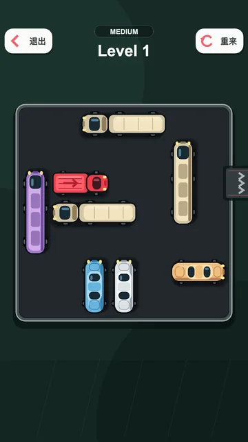
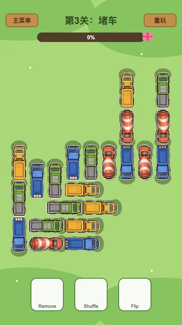

Long-horizon visual puzzle environments
LongPuzzleBench
Interactive puzzles where one legal move can decide whether dozens of future moves still exist.
LongPuzzleBench evaluates GUI agents across six stateful browser games and 114 levels—then opens their trajectories to inspection.
- Games
- 6
- Levels
- 114
- Evaluation cells
- 16
 01
01

19 42
42
Same action space. A different future after every move.
Recent updates
The project is moving.
Four concrete releases from the benchmark’s first public week.
-
Browser playground released
Twelve curated levels across all six game families are now playable without an install.
-
Trajectory research note published
Five recurring failures are reconstructed from real model actions and board states.
-
Leaderboard refreshed ↗
Eighteen complete configurations now cover every evaluation cell.
-
Initial benchmark release ↗
Six deterministic browser puzzle environments and 114 levels were opened.
What LongPuzzleBench tests
A puzzle is not a question.
A static answer can be right once. Here, an agent must keep its account of the world right after every click, drag, swipe, collision, and state change.
-
01
observe → act → rebuild
Interactive
The board changes after every action. Observation and planning repeat until the level ends.
-
02
pixels + memory
Stateful
Objects, selected sources, stopping positions, occupied cells, and exposed holes must persist.
-
03
local move ≠ safe move
Consequential
A move can be legal now and still cover the only hole or consume the only route needed later.
Explore the suite
Small interfaces. Long consequences.
Six game families expose different failures in access, identity, ordering, coverage, workspace, and shared space.
-
Two taps
Irreversible access
Bolt Unscrew
Move screws without letting physics cover every future hole. Play hard 1 → -
Drag
Object identity
Rush Hour
Preserve vehicle identity while the target temporarily moves away from the exit. Play hard 6 → -
 Two taps
Temporary workspace
Two taps
Temporary workspaceNut and Bolt
Sort 56 nuts while preserving enough room for later transfers. Play hard 2 → -

TapDependency orderingTruck Escape
Clear a 50-truck field in an order that keeps each heading open. Play level 5 → -
 Swipe
Persistent localization
Swipe
Persistent localizationMaze Paint
Cover every cell when the ball can stop only at a wall or edge. Play hard 4 → -
Click path
Shared space
Color Connect
Route eight pairs without consuming another color’s only corridor. Play hard 1 →
Latest research · trajectory analysis
The move was legal. The puzzle was already lost.
In Bolt Unscrew, 13 of 18 complete runs reach a state with no available hole. Twelve make progress on the transfer that creates the deadlock.
The matched traces show why final scores are not enough: one source disappears under the falling board; another preserves three more transfers.


Suggested first puzzle
Maze Paint · Easy 1
Seven optimal swipes. The ball cannot stop midway.
Mouse + touchPlayground
Think the puzzles look easy? Try one.
The public playground uses the same checked-in game runtime and mechanics as the benchmark, without evaluator state, agent time limits, or diagnostic hints.
- 12 curated demo levels
- All six game families
- No install or account
Benchmark snapshot
The frontier clears only about half the benchmark.
All ranked configurations cover the complete 16-cell evaluation plan under the released progressive protocol.
Best LongPuzzleBench score
54.796/100 gpt-5.6-sol · medium reasoning- Success rate
- 55.42%
- Complete configurations
- 18
- 01 gpt-5.6-sol · medium54.796
- 02 gpt-5.6-sol · low54.142
- 03 gpt-5.6-sol · high49.968
Human baseline Not reported in this release.
Project resources
Inspect the artifact.
Source, protocol, results, and trajectory evidence remain public and reproducible.
- 01 · SourceGitHub repositoryHarness, environment source, configs, and tests.↗
- 02 · MethodEvaluation protocolObservation, action, scoring, and progression rules.↗
- 03 · ResultsMachine-readable leaderboardPer-game and per-cell scores for all complete runs.↗
- 04 · EvidenceTrajectory findings bundleClaims, source hashes, story frames, and annotations.→